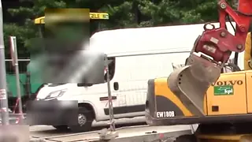

Все камеры2 камеры, 31 клип



Самосвал Р 417 КМ въехал
Сегодня, 14:32

m30 · r30 — Как в «Доме» Apple: большой живой кадр, под ним полоса клипов событий и одна фраза о том, что случилось. Данные — пример; кадры — Wikimedia Commons, лицензия на кадре.